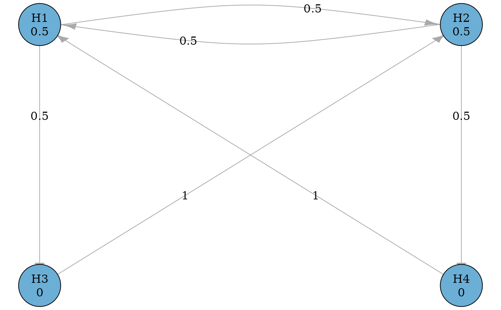

The plot of an initial_graph translates the hypotheses into vertices and
transitions into edges to create a network plot. Vertices are labeled with
hypothesis names and hypothesis weights, and edges are labeled with
transition weights. See vignette("graph-examples") for more illustration
of commonly used multiple comparison procedure using graphs.
Arguments
- x
An object of class
initial_graphto plot.- ...
Other arguments passed on to
igraph::plot.igraph().- v_palette
A character vector of length two specifying the colors for retained and deleted hypotheses. More extensive color customization must be done with
vertex.color.- layout
An igraph layout specification (See
?igraph.plotting), or"grid", which lays out hypotheses left-to-right and top-to-bottom.nrowandncolcontrol the grid shape.- nrow
An integer scalar specifying the number of rows in the vertex grid. If row and column counts are not specified, vertices will be laid out as close to a square as possible.
- ncol
An integer scalar specifying the number of columns in the vertex grid. If row and column counts are not specified, vertices will be laid out as close to a square as possible.
- edge_curves
A named numeric vector specifying the curvature of specific edges. Edge pairs (Where two vertices share an edge in each possible direction) are detected automatically and get 0.25 curvature. Adjust edges by adding an entry with name
"vertex1|vertex2, and adjust default edge pairs curvature by adding an entry with name"pairs"-edge_curves = c("pairs" = 0.5, "H1|H3" = 0.25, "H3|H4" = 0.75).- precision
An integer scalar indicating the number of decimal places to to display.
- eps
A numeric scalar. The transition weight of
epswill be displayed as \(\epsilon\), which indicates edges with infinitesimally small weights. See Bretz et al. (2009) for more details.- background_color
A character scalar specifying a background color for the whole plotting area. Passed directly to
graphics::par()(bg).- margins
A length 4 numeric vector specifying the margins for the plot. Defaults to all 0, since igraph plots tend to have large margins. It is passed directly to
graphics::par()(mar).
Customization of graphs
There are a few values for igraph::plot.igraph() that get their defaults
changed for graphicalMCP. These values can still be changed by passing them
as arguments to plot.initial_graph(). Here are the new defaults:
vertex.color = "#6baed6",vertex.label.color = "black",vertex.size = 20,edge.arrow.size = 1,edge.arrow.width = 1,edge.label.color = "black"asp = 0.
Neither graphicalMCP nor igraph does anything about overlapping edge
labels. If you run into this problem, and vertices can't practically be
moved enough to avoid collisions of edge labels, using edge curves can help.
igraph puts edge labels closer to the tail of an edge when an edge is
straight, and closer to the head of an edge when it's curved. By setting an
edge's curve to some very small value, an effectively straight edge can be
shifted to a new position.
References
Bretz, F., Posch, M., Glimm, E., Klinglmueller, F., Maurer, W., and Rohmeyer, K. (2011). Graphical approaches for multiple comparison procedures using weighted Bonferroni, Simes, or parametric tests. Biometrical Journal, 53(6), 894-913.
Xi, D., and Bretz, F. (2019). Symmetric graphs for equally weighted tests, with application to the Hochberg procedure. Statistics in Medicine, 38(27), 5268-5282.
See also
plot.updated_graph() for the plot method for the updated graph after
hypotheses being deleted from the initial graph.
Examples
# A graphical multiple comparison procedure with two primary hypotheses (H1
# and H2) and two secondary hypotheses (H3 and H4)
# See Figure 4 in Bretz et al. (2011).
hypotheses <- c(0.5, 0.5, 0, 0)
delta <- 0.5
transitions <- rbind(
c(0, delta, 1 - delta, 0),
c(delta, 0, 0, 1 - delta),
c(0, 1, 0, 0),
c(1, 0, 0, 0)
)
g <- graph_create(hypotheses, transitions)
plot(g)

# A graphical multiple comparison procedure with two primary hypotheses (H1
# and H2) and four secondary hypotheses (H31, H32, H41, and H42)
# See Figure 6 in Xi and Bretz (2019).
hypotheses <- c(0.5, 0.5, 0, 0, 0, 0)
epsilon <- 1e-5
transitions <- rbind(
c(0, 0.5, 0.25, 0, 0.25, 0),
c(0.5, 0, 0, 0.25, 0, 0.25),
c(0, 0, 0, 0, 1, 0),
c(epsilon, 0, 0, 0, 0, 1 - epsilon),
c(0, epsilon, 1 - epsilon, 0, 0, 0),
c(0, 0, 0, 1, 0, 0)
)
hyp_names <- c("H1", "H2", "H31", "H32", "H41", "H42")
g <- graph_create(hypotheses, transitions, hyp_names)
plot_layout <- rbind(
c(0.15, 0.5),
c(0.65, 0.5),
c(0, 0),
c(0.5, 0),
c(0.3, 0),
c(0.8, 0)
)
plot(g, layout = plot_layout, eps = epsilon, edge_curves = c(pairs = .5))